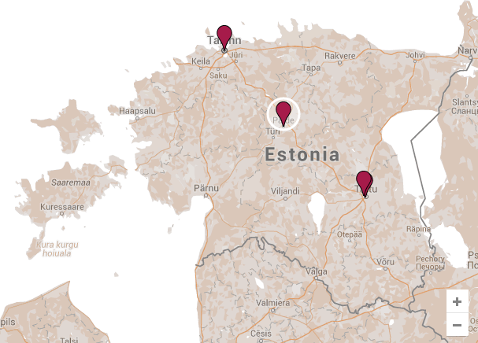

FOTOORIENTEERUMINE
Vali rada
Loo rada
Mobiilirakendus
Parimad tulemused
Tutvu juhendiga
Tagasiside
Meie sõbrad
Logi välja

Vali rada
-
Tartu Ülikooli ring
-
Tallinna vanalinn
-
Paide Special
-
Tartu kesklinna rada
Viimased teated
-
Admin: Uus rada Tartu kesklinnas. Kõik mängima!
-
Pets: Parim site ever!!! #fotoorient
-
Admin: Muudatus reeglites! Lisaküsimustele vastamine nüüd senisest veelgi kaalukam.
-
Siilike: Kas auhindu ka jagatakse?
-
Meie Kostja: Mağa Ja tebja ljubju
-
Admin Nüüd on kõigil kasutajatel võimalus ka ise radasid luua
-
TartuVaim: Meile meeldis, ootame uusi radasid :)
-
Aivar: Esssaa!!!